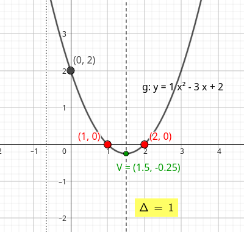

Seção 3 Zero da Função Quadrática
Subseção 3.1 Calcular zeros da função utilizando a forma canônica
Subseção 3.2 Discriminante
Como já foi comentado no capítulo Escrevendo a Função Quadrática na Forma Canônica, em Demonstração, Discriminante é o nome dado ao símbolo \(\Delta\text{,}\) uma constante cujo valor é \(b^2-4ac\text{,}\) ou seja, \(\Delta=b^2-4ac\text{.}\)
No estudo de funções quadráticas, o discriminante da função quadrática indica quantas raízes reais a função possui. Graficamente, isto indica o número de vezes que a parábola intersecta o eixo das abscissas (eixo x). Ou seja:
- Se \(\Delta>0\text{,}\) então a função possui duas raízes ou dois zeros da função. Logo, a parábola intersecta duas vezes o eixo x.
- Se \(\Delta=0\text{,}\) então a função possui uma raíz ou um zero da função. Logo, a parábola intersecta uma vez o eixo x.
- Se \(\Delta<0\text{,}\) então a função não possui raízes ou zeros da função reais. Logo, a parábola não intersecta o eixo x.
Observe o gráfico interativo em que o valor de \(\Delta\) está destacado em amarelo, a fórmula da função quadrática está destacado em azul e os zeros da função aparecem em vermelho. Mude os valores dos coeficientes \(a\text{,}\) \(b\) e \(c\text{,}\) utilizando os controles deslizantes, atentando ao valor de \(\Delta\) e a quantidade de zeros da função.
Veja alguns exemplos de como determinar o valor do discriminante em funções quadráicas:
-
Determine o valor do discriminante nas funções a seguir:
- \(f(x)=x^2-6x+5\)
Solução.
\begin{equation*} \Delta=b^2-4ac=(-6)^2-4\cdot 1\cdot 5 = 36-20 = 16 \end{equation*} - \(g(x)=-x^2+4x-4\)
Solução.
\begin{equation*} \Delta=b^2-4ac=4^2-4\cdot (-1)\cdot (-4)= 16 - 16 = 0 \end{equation*} - \(h(x)=x^2+4x+5\)
Solução.
\begin{equation*} \Delta=b^2-4ac=4^2-4\cdot 1\cdot 5 = 16 - 20 = -4 \end{equation*}
-
Determine quantas raízes reais as funções quadráticas a seguir possuem.
- \(y=(x-2)^2+1\)
Solução.
Escrevendo a função quadrática na forma padrão, temos que:\begin{equation*} y=x^2-4x+4+1=x^2-4x+5\text{,} \end{equation*}onde \(a=1\text{,}\) \(b=-4\) e \(c=5\text{.}\) Logo\begin{equation*} \Delta=b^2-4ac=(-4)^2-4\cdot 1\cdot 5 = 16 - 20 = -4\text{.} \end{equation*}Portanto a função não possui raízes pois \(\Delta>0\text{.}\) - \(y=25-x^2\)
Solução.
Como \(a=-1\text{,}\) \(b=0\) e \(c=25\text{,}\) temos que:\begin{equation*} \Delta=b^2-4ac=0^2-4\cdot (-1)\cdot 25=100 \end{equation*}Portanto, como \(\Delta>0\) então a função possui duas raízes distintas. - \(y=x^2-14x+49\)
Solução.
Como \(a=1\text{,}\) \(b=14\) e \(c=49\text{,}\) temos que:\begin{equation*} \Delta=b^2-4ac=14^2-4\cdot (1)\cdot 49= 196-196=0 \end{equation*}Portanto, como \(\Delta=0\) então a função possui um zero da função real.
Vamos comparar três exemplos de gráficos e fórmulas de funções quadráticas que apresentam os valores do discriminante e como podemos observar no gráfico.
Veja o gráfico da função quadrática \(f(x)=x^2-3x+2\text{.}\)
- Coeficientes: \(a=1\text{,}\) \(b=-3\) e \(c=2\text{.}\)
- Discriminante: \(\Delta=b^2-4ac=(-3)^2-4\cdot 1\cdot 2=9-8=1\text{.}\) \(\Delta>0\text{,}\) portanto, duas raízes reais distintas.
- Como \(a>0\text{,}\) então a concavidade da parábola é vidada para cima.
- O coeficiente \(c=2\) mostra que a parábola passa pelo ponto \((0,2)\text{.}\)
- Gráfico: 